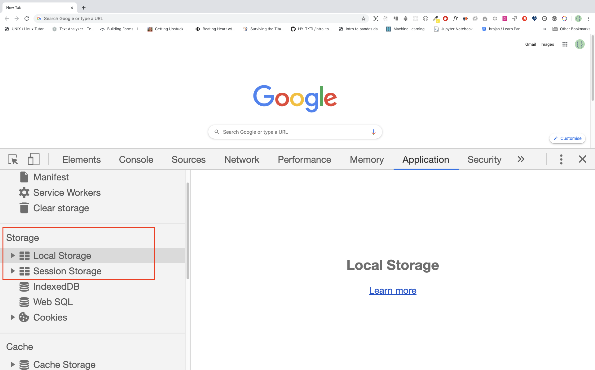

Web Storage(sessionStorage and localStorage) is a new HTML5 API offering important benefits over traditional cookies. Before HTML5, application data had to be stored in cookies, included in every server request. Web storage is more secure, and large amounts of data can be stored locally, without affecting website performance. The data storage limit of cookies in many web browsers is about 4 KB per cookie. We Storages can store far larger data (at least 5MB) and never transferred to the server. All sites from the same or one origin can store and access the same data.
The data being stored can be accessed using JavaScript, which gives you the ability to leverage client-side scripting to do many things that have traditionally involved server-side programming and relational databases. There are two Web Storage objects:
localStorage is similar to sessionStorage, except that while data stored in localStorage has no expiration time, data stored in sessionStorage gets cleared when the page session ends — that is, when the page is closed.
It should be noted that data stored in either localStorage or sessionStorage is specific to the protocol of the page.
The keys and the values are always strings (note that, as with objects, integer keys will be automatically converted to strings).

sessionStorage is only available within the browser tab or window session. It’s designed to store data in a single web page session. That means if the window is closed the session data will be removed. Since sessionStorage and localStorage has similar methods, we will focus only on localStorage.
The HTML5 localStorage is the para of the web storage API which is used to store data on the browser with no expiration data. The data will be available on the browser even after the browser is closed. localStorage is kept even between browser sessions. This means data is still available when the browser is closed and reopened, and also instantly between tabs and windows.
Web Storage data is, in both cases, not available between different browsers. For example, storage objects created in Firefox cannot be accessed in Internet Explorer, exactly like cookies. There are five methods to work on local storage: setItem(), getItem(), removeItem(), clear(), key()
Some use case of Web Storages are
For the examples mentioned above, it makes sense to use localStorage. You may be wondering, then, when we should use sessionStorage.
In cases, we want to to get rid of the data as soon as the window is closed. Or, perhaps, if we do not want the application to interfere with the same application that’s open in another window. These scenarios are served best with sessionStorage.
Now, let us see how make use of these Web Storage APIs.
HTML web storage provides two objects for storing data on the client:
Web Storage objects:
When we set data to be stored in a localStorage, it will be stored as a string. If we are storing an array or an object, we should stringify it first to keep the format unless otherwise we lose the array structure or the object structure of the original data.
We store data in the localStorage using the localStorage.setItem method.
//syntax
localStorage.setItem('key', 'value')
localStorage.setItem('firstName', 'Asabeneh') // since the value is string we do not stringify it
console.log(localStorage)
Storage {firstName: 'Asabeneh', length: 1}
localStorage.setItem('age', 200)
console.log(localStorage)
Storage {age: '200', firstName: 'Asabeneh', length: 2}
const skills = ['HTML', 'CSS', 'JS', 'React']
//Skills array has to be stringified first to keep the format.
const skillsJSON = JSON.stringify(skills, undefined, 4)
localStorage.setItem('skills', skillsJSON)
console.log(localStorage)
Storage {age: '200', firstName: 'Asabeneh', skills: 'HTML,CSS,JS,React', length: 3}
let skills = [
{ tech: 'HTML', level: 10 },
{ tech: 'CSS', level: 9 },
{ tech: 'JS', level: 8 },
{ tech: 'React', level: 9 },
{ tech: 'Redux', level: 10 },
{ tech: 'Node', level: 8 },
{ tech: 'MongoDB', level: 8 }
]
let skillJSON = JSON.stringify(skills)
localStorage.setItem('skills', skillJSON)
const user = {
firstName: 'Asabeneh',
age: 250,
skills: ['HTML', 'CSS', 'JS', 'React']
}
const userText = JSON.stringify(user, undefined, 4)
localStorage.setItem('user', userText)
We get data from the local storage using localStorage.getItem() method.
//syntax
localStorage.getItem('key')
let firstName = localStorage.getItem('firstName')
let age = localStorage.getItem('age')
let skills = localStorage.getItem('skills')
console.log(firstName, age, skills)
'Asabeneh', '200', '['HTML','CSS','JS','React']'
As you can see the skill is in a string format. Let us use JSON.parse() to parse it to normal array.
let skills = localStorage.getItem('skills')
let skillsObj = JSON.parse(skills, undefined, 4)
console.log(skillsObj)
['HTML','CSS','JS','React']
The clear method, will clear everything stored in the local storage
localStorage.clear()
🌕 You are determined .Now, you knew a Web Storages and you knew how to store small data on client browsers. You are 17 steps a head to your way to greatness. Now do some exercises for your brain and for your muscle.
🎉 CONGRATULATIONS ! 🎉